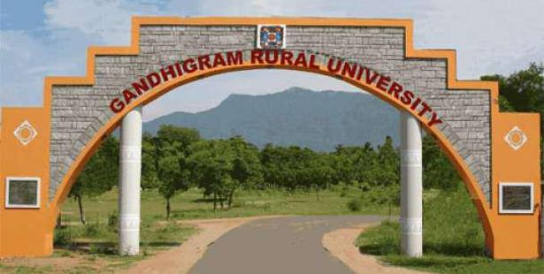

Home
- 📚 Courses Offered
- 🫠Facilities
- 🅠Sports
- 💰 Fees Structure
- 📠Examination
📠Gandhigram
About Gandhigram University
University: Gandhigram Rural Institute is a Deemed University under the Ministry of Education, Govt. of India. It was established with a vision to promote rural development through quality education, training, and extension.
College: The university consists of multiple constituent colleges that offer undergraduate, postgraduate, and doctoral programs in various disciplines including arts, science, education, engineering, and rural development.
Institute: The main institute is known for its eco-friendly campus and strong emphasis on value-based education and community development. It has collaborations with national and international institutions.
Admission: Admissions are based on entrance exams, academic merit, and reservation policies. Applications are submitted online via the .
Staffs: The university staff includes administrative personnel dedicated to supporting students and faculty. They ensure smooth operations of academic, residential, and extracurricular functions.
Faculty Members: Gandhigram University has experienced and qualified faculty across departments. They actively participate in research, training, and social outreach programs, helping students grow academically and socially.
Sports Achievements: The university has won multiple inter-collegiate competitions in volleyball, athletics, and kabaddi.
Academic Achievements: Students and faculty are recognized nationally for innovations in rural technology and social work.
Gandhigram Rural Institute (GRI) – Deemed to be University, was founded in 1956 by Dr. T.S. Soundaram and Dr. G. Ramachandran, guided by the ideals of Mahatma Gandhi. Located in Gandhigram, Tamil Nadu, the institution is committed to rural development through quality education, research, and extension work.
The university emphasizes rural development, self-reliance, and sustainability. It offers a wide range of programs in arts, science, engineering, education, home science, and development studies. The serene, green campus supports holistic learning and community engagement.
📠Location
Gandhigram Rural Institute, Gandhigram, Dindigul District, Tamil Nadu – 624302, India
🌠Useful Links
Contact
🌠Website: ruraluniv.ac.in
📧 Email: info@ruraluniv.ac.in
🫠College Address: Gandhigram Rural Institute, Gandhigram – 624 302, Dindigul District, Tamil Nadu, India
🢠Institute Address: The Registrar, Gandhigram Rural Institute – Deemed University, Gandhigram – 624 302
📠Main Office Phone: +91-451-2452371
📠Admission Office: +91-451-2452372
📠Registrar Office: +91-451-2452373
📠General Office: +91-451-2452374
📠Security Office: +91-451-2452375
📠Controller of Examinations: +91-451-2452376
📠Faculty of Rural Health: +91-451-2452377
📠Sanitary Office: +91-451-2452378
🧑‍🎓 Boys Hostel Contact: +91-451-2452380
👩‍🎓 Girls Hostel Contact: +91-451-2452381